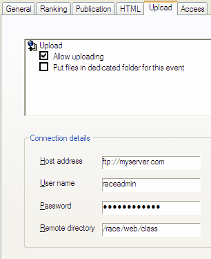

Through in the menu, and then choosing for the Upload/Mail tab, you can edit the settings needed to upload publications to a web server and to e-mail publications through the Event items selection dialog.

The following upload and mail settings can be made.
You can enable the upload functionality.
Enter for the FTP server:
You can select that uploaded files are put in a dedicated folder, which's name is based on the event title.
For e-mail you can pre-configure e-mail addresses to which mails must be distributed for this event when you use the Event items selection dialog, and if these recepients must be included as BCC (hidden from each other). Multiple recipients can be included, comma-separated or semi-colon-separated.